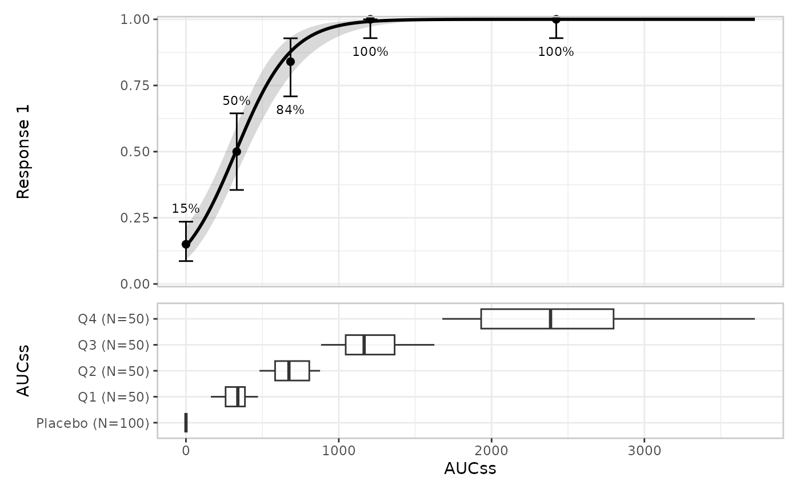

Create an er_plot specification for exposure-response visualization. Build the plot by adding layers (model, summary, quantiles, data, groups) and render with plot()/print() or er_plot_build().
Arguments
- data
Data frame or tibble containing the observed data.
- exposure
Exposure variable (one variable, unquoted).
- response
Response variable (one variable, unquoted).
- stratify_by
Stratification variable used for colour and fill (one variable, unquoted).
- response_type
One of
"auto","binary","continuous", or"count".
Details
Layers are either singleton or additive: model, summary, quantile, and data layers are singleton (a second call replaces the previous); groups are additive (each call adds a panel).
stratify_by declares a discrete variable used for colour/fill across layers; each layer's keep_strata controls whether it uses stratification. Rows with NA in the stratification variable are kept as their own level.
response_type governs response-scale defaults and which interval method the quantile and VPC layers use; see response_type below and er_plot_add_quantiles() for details.
Examples
if (requireNamespace("erglm", quietly = TRUE)) {
library(erglm)
mod <- erglm_model(ae1 ~ aucss, erglm_data, family = binomial())
erglm_data |>
er_plot(aucss, ae1) |>
er_plot_add_model(mod) |>
er_plot_add_quantiles() |>
er_plot_add_groups(aucss) |>
plot()
}
